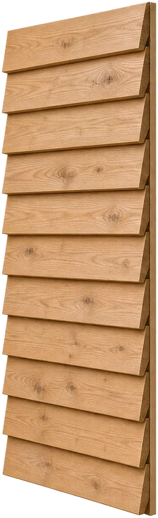
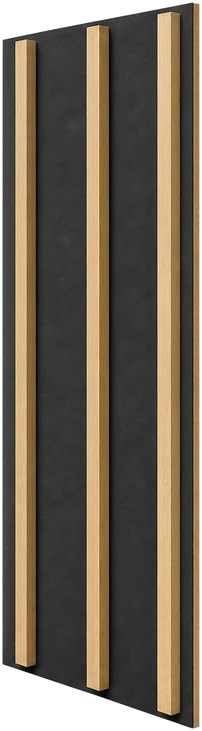
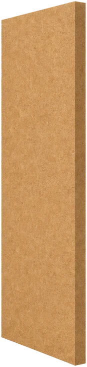
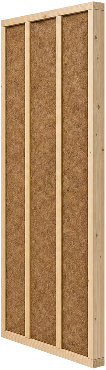
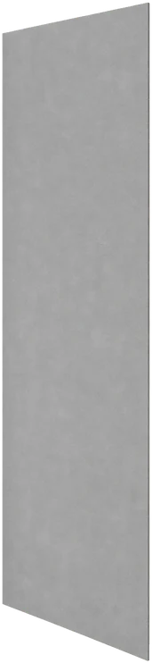
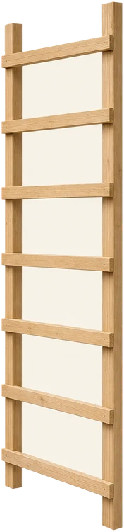
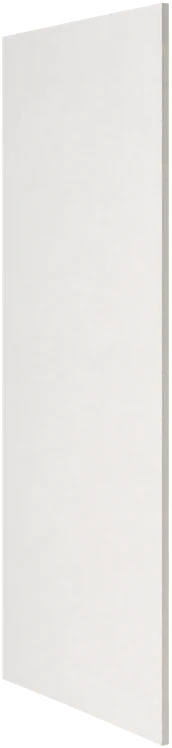

Potiahnite stenu.







Prečo difúzneotvorená?
Stena, ktorá vie prepustiť vodnú paru von. Vlhkosť v nej neostáva stáť — a to je hlavný dôvod, prečo drevostavba vydrží. Aj keď je to u nás ešte stále pomerne nová technológia, v USA a Kanade je osvedčená už viac ako 200 rokov a preverená náročnejšími klimatickými podmienkami, ako u nás.
Zatepľujeme prírodnými izoláciami na báze drevného vlákna alebo minerálnou vatou — podľa toho, čo stavba potrebuje. Konštrukcia vzniká ako montovaná drevostavba — od základov až po kolaudáciu.